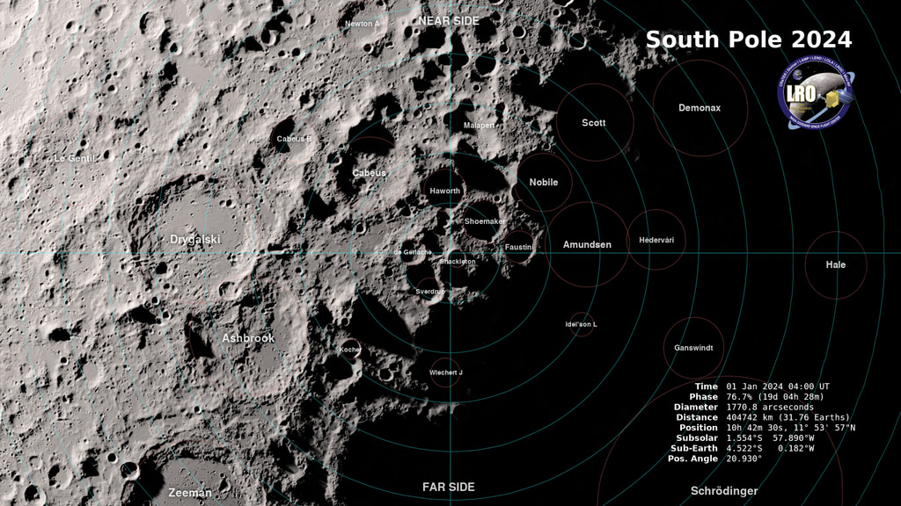

Rabbita Moon - First Trusted Square / Shackleton Rim rehearsal tile
revise rover power model, route count, or site window before simulation
mission: block

loading globe
hardware denied
lat -- lon --
scale --
N
+
-
H
S
G
F
R
C
live moon
drag, zoom, then fly to the trusted square
global texture for context; LOLA evidence below
+
-
N
lunar site
First Trusted Square / Shackleton Rim rehearsal tile
zoom sequence
south-pole landscape to 81-window measured LOLA corridor
selected window
rank-1 northeast-stepout candidate
robot authority
hardware denied until lunar evidence gates clear
Noetix Walk